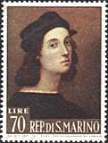
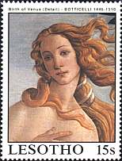
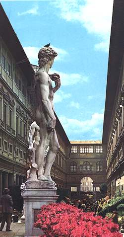

 |
 |
|
| Uffizi Gallery, Florence | ||
| General Presentation | ||
Uffizi, the major public gallery of Italian paintings in Florence, located close to the Piazza della Signoria. The gallery consists of an elegant pair of linked, arcaded buildings dating from 1560-1580, designed by Giorgio Vasari, Court Painter to Grand Duke Cosimo I de' Medici. They were originally intended for use as administrative offices (uffizi) but, their innovative iron structure allowing for large windows, they provided suitable space for the Medici family's art collections. It is those works that form the nucleus of the collection today.
 |
Though the Uffizi's 1,800 works do not form a large collection, their
sheer overall quality, particularly of Italian Renaissance art, makes
the gallery one of the most important in the world. The displays of
Italian art open with three monumental altarpieces by the 13th-century
masters Giotto, Duccio, and Cimabue, and move through the
International Gothic with works by Simone Martini and Gentile da
Fabriano, before their climax in the rooms devoted to the Early
Renaissance. Paintings by Masaccio, Fra Angelico, Paolo Uccello, and
Piero della Francesca are particularly notable, although it is perhaps
the four rooms devoted to Sandro Botticelli—in particular his most
celebrated works, Primavera and The Birth of Venus—that
make the greatest impression. |
The Flemish, Dutch, and German schools are represented by 15th- to 16th-century paintings by Hugo van der Goes, Lucas Cranach, Rembrandt, Peter Paul Rubens, and Sir Anthony van Dyck. The collection ends with 18th-century works by Canaletto, Francesco Guardi, Francisco de Goya, and Jean-Baptiste Siméon Chardin. In the Corridoio Vasariano, linking the Uffizi with the Pitti Palace, hangs a famous collection of self-portraits that runs from Vasari and Raphael to Rubens, Diego Velázquez, Camille Corot, and Eugène Delacroix. After: Microsoft Encarta 1996.
Notices:
-
On the following pages I show the paintings as they appear in different halls of the Uffizi gallery. Because this is not only a page about stamps, but also one about arts and because many stamps were issued before the paintings were restored (or were issued in less then optimal conditions), I show also some paintings as they appear today to the visitors of the gallery. With the time, the images taken from postcards will be replaced with maximum cards or with stamps that represent the masterpieces from Uffizi as they deserve it.
-
Don't miss to visit this wonderful gallery, even if you have to line up for six hours in its court. To make the time pass, just think at the wonderful paintings that you have admired on the following pages :-)
| Created 08/02/2000. Revised: 08/07/00. Copyright © 2000 by Victor Manta, Switzerland. All rights reserved in all countries. |
|